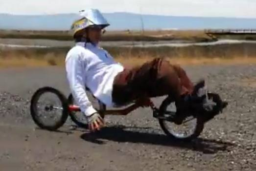
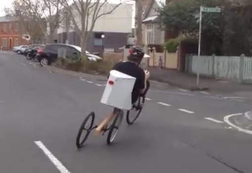
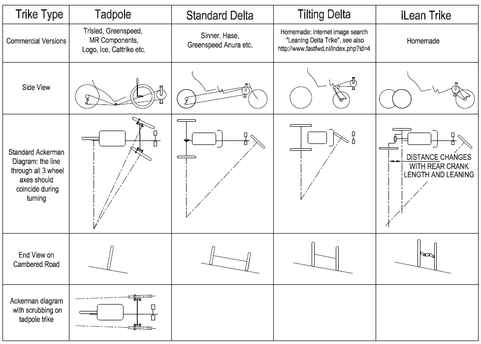
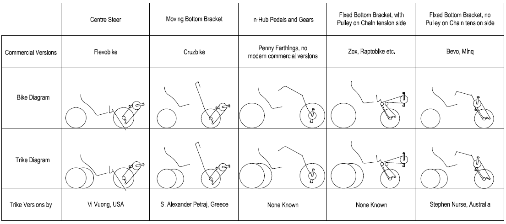
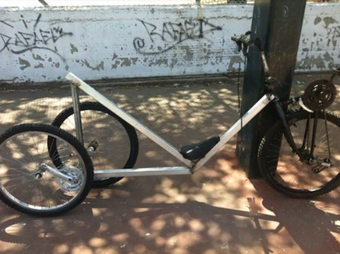

Contents | About | Contact
article 20, issue 07
Leaning Trikes using Rear Axle Pedal Crank Mechanism (condensed version)Stephen Nurse
December 21, 2013Abstract
Tilting Delta Trikes with a rear axle made from standard cycle cranks were invented by Mr. Vi Vuong, who calls them "iLean trikes". This article introduces these trikes, shows their relationship to other human-powered vehicles, and considers their tilting and suspension performance. This is a slightly condensed version. Download the complete article PDF (550 kB) and the supplemental spreadsheet XLS (700 kB).
Introduction
Recent internet videos [2, 3] posted by Mr. Vi Vuong astonished the human-powered-vehicle community. He had mounted cycle wheels "in the place of pedals" on cranks on a working bottom bracket and used the resulting assembly as the rear axles of a self-leaning delta trike. See fig. 1.
Since seeing the videos I have built my own version of the trike, see fig. 2. Riding it feels just like my equivalent bike [1] with the rear wheels letting the vehicle lean in corners, cope with camber on roads and give a suspension effect. The rear axle makes it feel like there's a "virtual rear wheel" midway between the actual rear wheels. [Editor's note: Steve has documented his progress with his trike then called Vicycle, starting here and in further blog posts.]
This rear-wheel mechanism makes braking or driving of the rear wheels difficult, however it seems to be suitable as a variation on most front-wheel-drive recumbent bikes. These include Python and moving-bottom-bracket (Cruzbike) styles as well as fixed-bottom-bracket direct styles (Bevo bike). There's no reason it should not work as well on indirect-drive and other front-wheel-drive recumbents (e.g. Zox, Raptobike, Handcycles).
 
[Figure 1] Vi Vuong
[Figure 2] Stephen Nurse
Handling
The layout and steering arrangement of these new iLean tilting trikes is shown in fig. 3 together with those of other leaning delta trikes and non-leaning delta and tadpole trikes.
In curves, the axes of all three wheels should meet at a single point. This principle is called Ackermann steering [4], and unless this condition is fulfilled, the tires scrub and resist forward motion. A frequent demonstration of wheel scrub is in a tadpole trike with poorly aligned (toed in or toed out) front wheels. Most delta trikes have innate Ackermann steering, however iLean trikes do not. They have "good enough" Ackermann which is dynamic and depends on the lean of the trike as well as the trike's geometry. With good geometry, the trike's wheel alignment improves when cornering at speed.

[Figure 3] Trike comparison and steering
Handling and behaviour of these trikes include:
- On flat ground, straight ahead, the rider is constantly turning and balancing, just as in normal bike operation.
- On cambered roads, additionally, seat and rider stay upright as the back wheels assume different heights. Height differences between wheels are often small.
- Leaning during turns, the rider leans and the rear wheels assume significantly different “heights” when seen from a plane parallel to the rear wheels. When seen from the side, the horizontal distance between the back wheels is foreshortened, reducing the wheel-scrub effect of the geometry.
- Suspension. When one rear wheel hits a bump, it raises the back of the trike in a lever motion. The rear-wheel bottom-bracket assembly goes up only half the height of the bump, and this is what the rider feels. On 20” (500mm OD) wheels on a 10mm bump, the average rate of rise the rider feels is close to that of a 2000mm wheel and the effective height of the bump is still halved. This seems to indicate an effective suspension. (Refer to complete article or suplemental spreadsheet for calculation.)
[Editor's note: Part of the principle involved seems to be that of the bogie, a modular subassembly attached to a vehicle, carrying wheels and axles. Each two-wheel bogie halves the motion of a single disturbance.]
- Simultaneous Actions. When riding, none of these behaviours occur in isolation. They all happen simultaneously, but the mechanism seems to cope.

[Figure 4] Front wheel drive bikes and their iLean-trike equivalents
Dimensions and Geometry
The relevant dimensions of iLean trikes are:
- Lateral distance between the rear-wheel ground-contact points, "Q" after the familiar pedal distance.
- Wheel diameter, "D"
- Crank length, "P"
- Longitudinal distance between the rear-wheel ground-contact points, "B"
Notable, changeable influences on the geometry are:
- "Q" can be made wide by splitting the crank axle and bottom bracket of the simple "pedal" construction. The resulting wide space can allow for a large load-carrying platform and improve the steering characteristic by allowing "B" to reduce dramatically when the trike leans in corners.
- "P" can be made short to improve wheel-scrub performance without much compromise to suspension performance. This shortening was done on the author's trike and wheel scrub (drift) disappeared when 170mm cranks were swapped for 90mm cranks.
- Suspension seems good enough that "increasing the effect of a bump" by moving the rear axle close to the rider would not compromise comfort.
- At least on paved roads, suspension seems good enough that reducing the rear-wheel size from 20" to 16" would not compromise comfort.
Static Stability
Preventing the rotation of the rear pedal mechanism around the bottom bracket stops the leaning and gives the trike static stability. This allows the rider to be stable when stopped at traffic lights or going very slowly. The iLean trikes seen so far are not equipped with this ability.
Scope
This study only considers trikes where the cranks making up the rear axle are mounted on opposite sides. Other mounts are possible and these can deliver different trike dynamics. One is with the cranks mounted at 90 degrees to each other as shown in S. Alexander Petraj's video.

[Figure 5] Alexander Petraj's iLean trike with cranks at 90°. Photo from here.
References
An Illustrated Guide to the Cycle Zoo by Stephen Nurse. ISBN 978-1-921488-08-5 published / available through http://modularbikes.com.au
http://en.openbike.org/wiki/~iLean by Vi Vuong. This website includes photos and links to videos and should be used in conjunction with this article.
Video of Vi Vuong's iLean trike https://www.youtube.com/user/TheFutonExpress
Download the complete article PDF (1 MB)
Download the supplemental spreadsheet XLS (650 kB)